抓握第5版参考真实驾驶员照片与驾驶教学视频抽帧，联合调整1号的手掌朝向、肩肘姿态与六驱动目标，使前臂和手掌顺接；腕部内扣约5°，四指、掌部和拇指支撑轮圈，避开后方拨片。使用原厂机器人与 G29 CAD，底座水平，转轴保留原模型自然倾角；大屏和仪表为静态预览画面。四种抓握经有限电机物理闭合形成，尚未训练转向策略，也未验证外部负载下的承载能力。
交互查看：bash scripts/run.sh -m humanlike_drive.env_runner.inspect_scene
1–4 切换抓握；V 切换相机；F 自由视角；C 切换碰撞视图；T 半透明受力点；空格运行／暂停物理；R 重置当前抓握。自由视角下可用鼠标拖动、缩放。
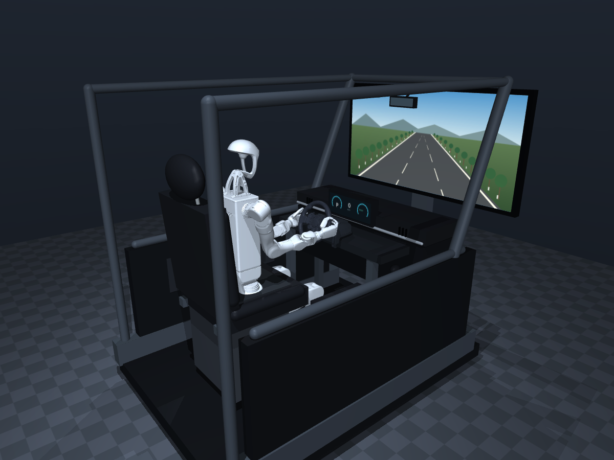
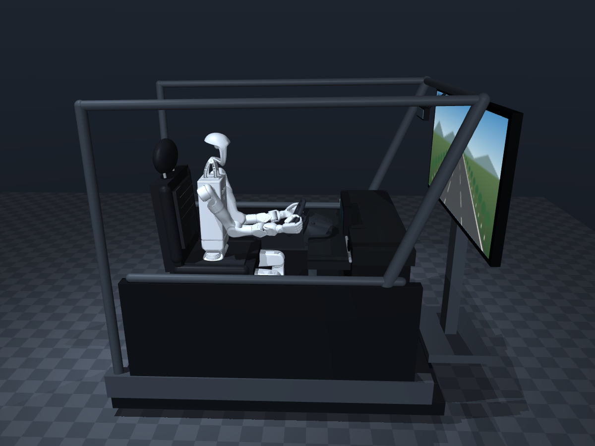
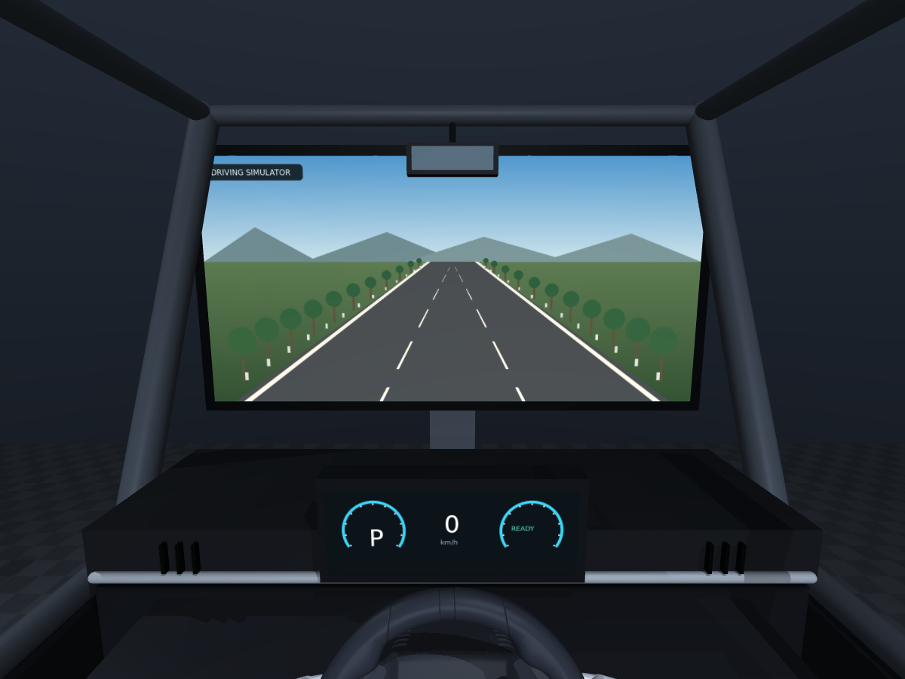
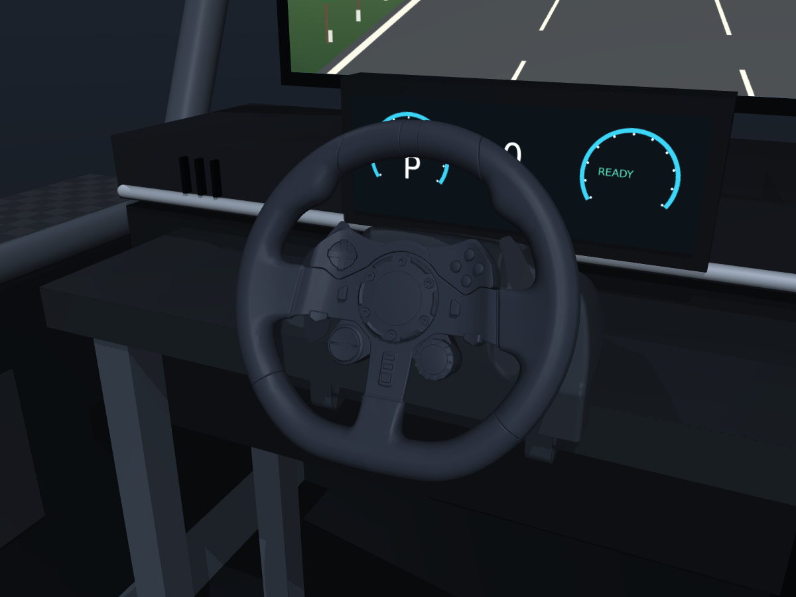
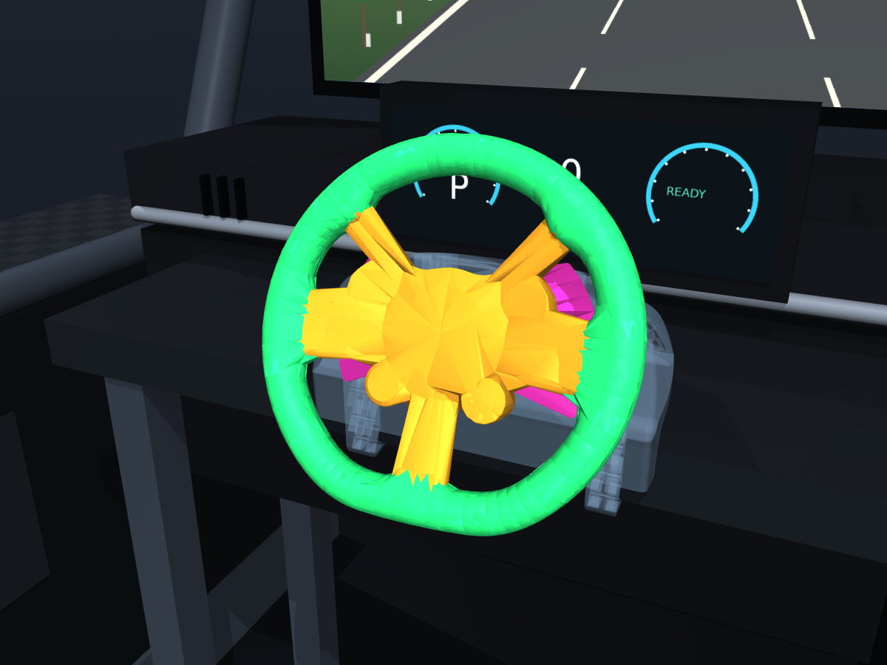
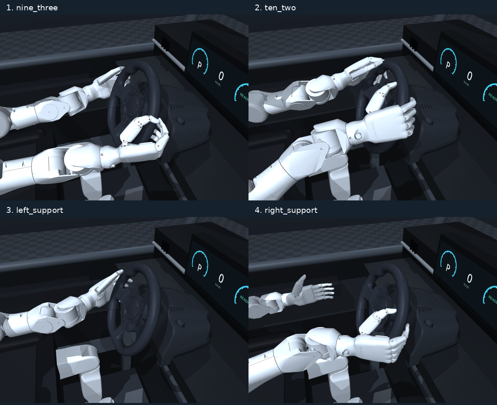
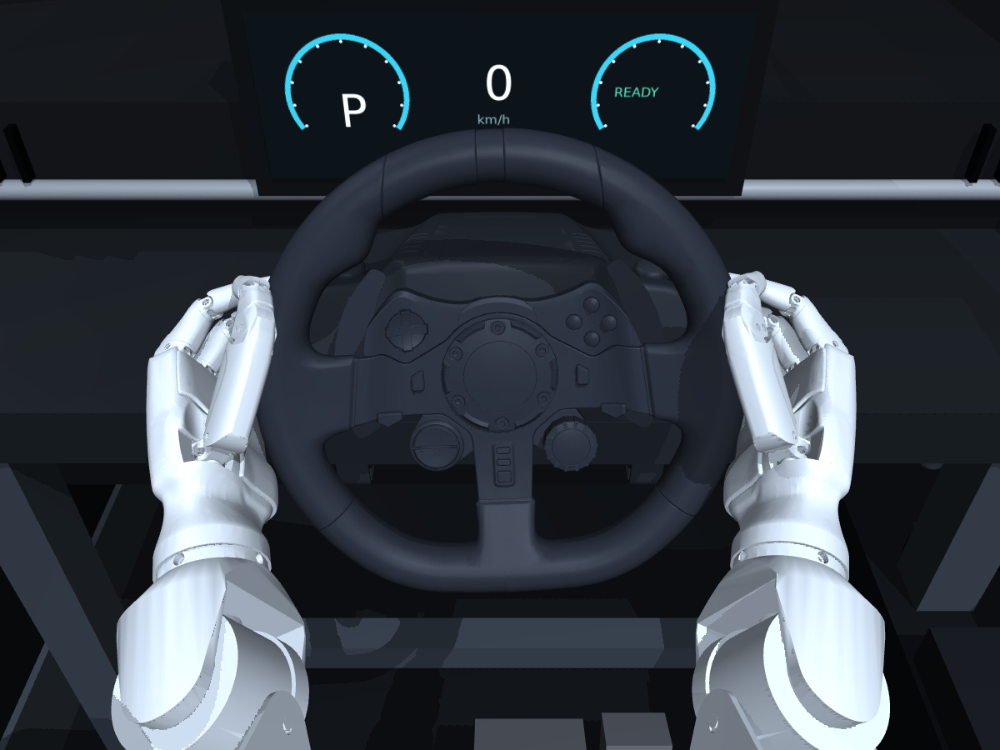
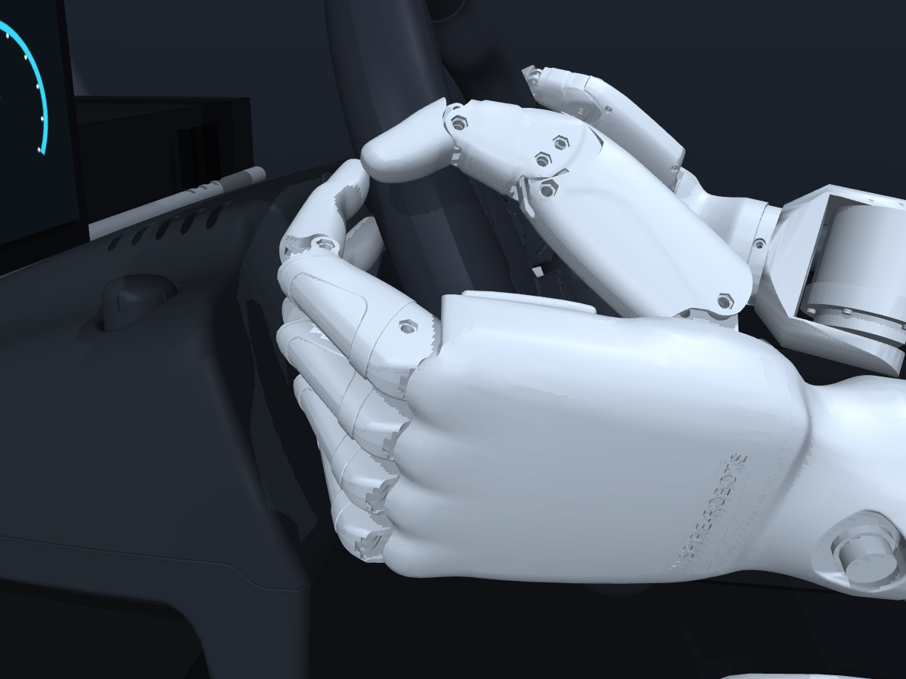
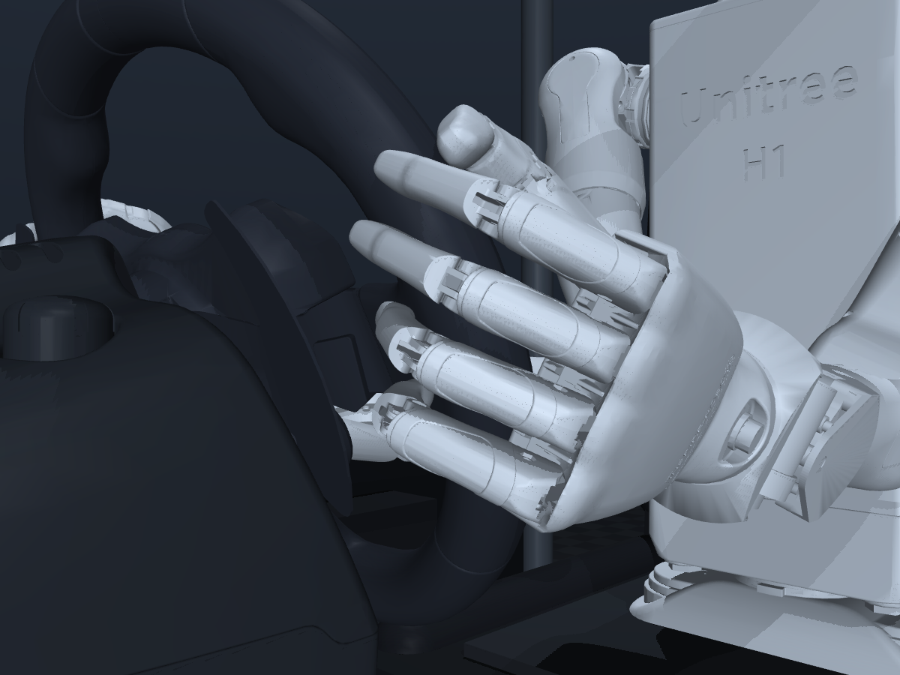
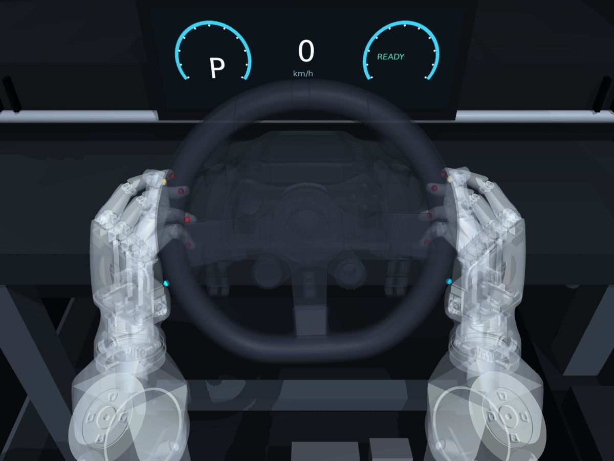
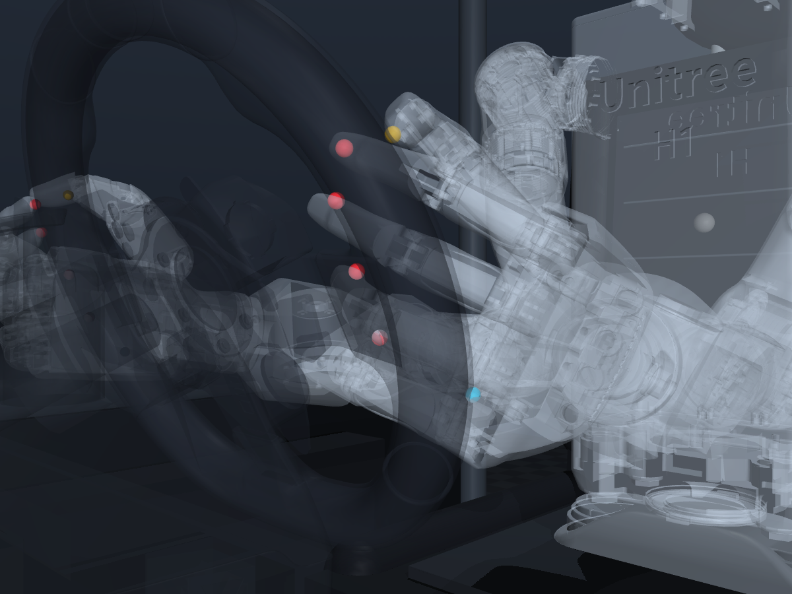